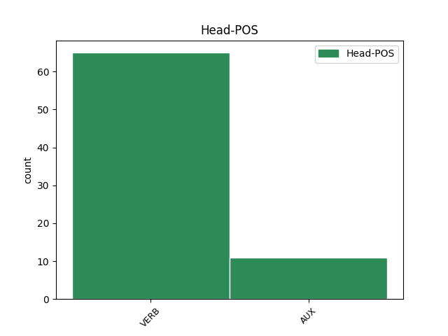

Distribution of features within this leaf



Agreement Rules sorted by frequency.
- When the dependent token is the direct object complements(comp:obj) of the head token, and the dependent token is AUX.
1 Jag _ _ _ _ 0 _ _ _
2 visste veta VERB PAST-ACT Mood=Ind|Tense=Past|VerbForm=Fin|Voice=Act 0 _ _ _
3 inte _ _ _ _ 0 _ _ _
4 längre _ _ _ _ 0 _ _ _
5 var _ _ _ _ 0 _ _ _
6 jag _ _ _ _ 0 _ _ _
7 var vara AUX PAST-ACT Mood=Ind|Tense=Past|VerbForm=Fin|Voice=Act 2 comp:obj _ SpaceAfter=No
8 . _ _ _ _ 0 _ _ _
1 Vinden _ _ _ _ 0 _ _ _
2 var _ _ _ _ 0 _ _ _
3 varm _ _ _ _ 0 _ _ _
4 , _ _ _ _ 0 _ _ _
5 en _ _ _ _ 0 _ _ _
6 passadvind _ _ _ _ 0 _ _ _
7 fylld _ _ _ _ 0 _ _ _
8 av _ _ _ _ 0 _ _ _
9 generositet _ _ _ _ 0 _ _ _
10 och _ _ _ _ 0 _ _ _
11 resor _ _ _ _ 0 _ _ _
12 , _ _ _ _ 0 _ _ _
13 en _ _ _ _ 0 _ _ _
14 vind _ _ _ _ 0 _ _ _
15 ägnad _ _ _ _ 0 _ _ _
16 att _ _ _ _ 0 _ _ _
17 skingra _ _ _ _ 0 _ _ _
18 skeppen _ _ _ _ 0 _ _ _
19 i _ _ _ _ 0 _ _ _
20 jordens _ _ _ _ 0 _ _ _
21 fyra _ _ _ _ 0 _ _ _
22 väderstreck _ _ _ _ 0 _ _ _
23 , _ _ _ _ 0 _ _ _
24 och _ _ _ _ 0 _ _ _
25 även _ _ _ _ 0 _ _ _
26 om _ _ _ _ 0 _ _ _
27 min _ _ _ _ 0 _ _ _
28 far _ _ _ _ 0 _ _ _
29 var vara AUX PAST-ACT Mood=Ind|Tense=Past|VerbForm=Fin|Voice=Act 34 mod _ _
30 för _ _ _ _ 0 _ _ _
31 ung _ _ _ _ 0 _ _ _
32 för _ _ _ _ 0 _ _ _
33 segelfartyg _ _ _ _ 0 _ _ _
34 gjorde göra VERB PAST-ACT Mood=Ind|Tense=Past|VerbForm=Fin|Voice=Act 0 _ _ _
35 vinden _ _ _ _ 0 _ _ _
36 honom _ _ _ _ 0 _ _ _
37 upphetsad _ _ _ _ 0 _ _ _
38 . _ _ _ _ 0 _ _ _
1 Jag _ _ _ _ 0 _ _ _
2 borde _ _ _ _ 0 _ _ _
3 ha _ _ _ _ 0 _ _ _
4 sagt _ _ _ _ 0 _ _ _
5 att _ _ _ _ 0 _ _ _
6 vilken _ _ _ _ 0 _ _ _
7 bilden _ _ _ _ 0 _ _ _
8 än _ _ _ _ 0 _ _ _
9 är vara AUX PRES-ACT Mood=Ind|Tense=Pres|VerbForm=Fin|Voice=Act 11 dislocated _ _
10 så _ _ _ _ 0 _ _ _
11 kommer komma AUX PRES-AUX Mood=Ind|Tense=Pres|VerbForm=Fin|Voice=Act 0 _ _ _
12 det _ _ _ _ 0 _ _ _
13 inte _ _ _ _ 0 _ _ _
14 att _ _ _ _ 0 _ _ _
15 vara _ _ _ _ 0 _ _ _
16 den _ _ _ _ 0 _ _ _
17 som _ _ _ _ 0 _ _ _
18 finns _ _ _ _ 0 _ _ _
19 utanpå _ _ _ _ 0 _ _ _
20 asken _ _ _ _ 0 _ _ _
21 . _ _ _ _ 0 _ _ _
1 Vad _ _ _ _ 0 _ _ _
2 som _ _ _ _ 0 _ _ _
3 var vara AUX PAST-ACT Mood=Ind|Tense=Past|VerbForm=Fin|Voice=Act 6 subj _ _
4 ännu _ _ _ _ 0 _ _ _
5 värre _ _ _ _ 0 _ _ _
6 var vara VERB PAST-ACT Mood=Ind|Tense=Past|VerbForm=Fin|Voice=Act 0 _ _ _
7 att _ _ _ _ 0 _ _ _
8 mor _ _ _ _ 0 _ _ _
9 hade _ _ _ _ 0 _ _ _
10 upptäckt _ _ _ _ 0 _ _ _
11 nylonet _ _ _ _ 0 _ _ _
12 , _ _ _ _ 0 _ _ _
13 så _ _ _ _ 0 _ _ _
14 lättvättat _ _ _ _ 0 _ _ _
15 , _ _ _ _ 0 _ _ _
16 och _ _ _ _ 0 _ _ _
17 nonchalerade _ _ _ _ 0 _ _ _
18 min _ _ _ _ 0 _ _ _
19 fotsvamp _ _ _ _ 0 _ _ _
20 och _ _ _ _ 0 _ _ _
21 de _ _ _ _ 0 _ _ _
22 röda _ _ _ _ 0 _ _ _
23 strimmorna _ _ _ _ 0 _ _ _
24 mellan _ _ _ _ 0 _ _ _
25 mina _ _ _ _ 0 _ _ _
26 ben _ _ _ _ 0 _ _ _
27 där _ _ _ _ 0 _ _ _
28 nylontrosornas _ _ _ _ 0 _ _ _
29 nylonspetsar _ _ _ _ 0 _ _ _
30 förde _ _ _ _ 0 _ _ _
31 krig _ _ _ _ 0 _ _ _
32 mot _ _ _ _ 0 _ _ _
33 min _ _ _ _ 0 _ _ _
34 ickenylonhud _ _ _ _ 0 _ _ _
35 . _ _ _ _ 0 _ _ _
1 Vi _ _ _ _ 0 _ _ _
2 behöver behöva VERB PRES-ACT Mood=Ind|Tense=Pres|VerbForm=Fin|Voice=Act 0 _ _ _
3 dig _ _ _ _ 0 _ _ _
4 ... _ _ _ _ 0 _ _ _
5 vad _ _ _ _ 0 _ _ _
6 du _ _ _ _ 0 _ _ _
7 vill vilja AUX PRES-AUX Mood=Ind|Tense=Pres|VerbForm=Fin|Voice=Act 2 appos _ SpaceAfter=No
8 ! _ _ _ _ 0 _ _ _
1 Det _ _ _ _ 0 _ _ _
2 var vara VERB PAST-ACT Mood=Ind|Tense=Past|VerbForm=Fin|Voice=Act 0 _ _ _
3 då _ _ _ _ 0 _ _ _
4 han _ _ _ _ 0 _ _ _
5 hade ha AUX PAST-AUX Mood=Ind|Tense=Past|VerbForm=Fin|Voice=Act 2 mod@cleft _ _
6 tagit _ _ _ _ 0 _ _ _
7 namnet _ _ _ _ 0 _ _ _
8 William _ _ _ _ 0 _ _ _
9 Wilson _ _ _ _ 0 _ _ _
10 . _ _ _ _ 0 _ _ _
1 Problemet _ _ _ _ 0 _ _ _
2 är vara AUX PRES-ACT Mood=Ind|Tense=Pres|VerbForm=Fin|Voice=Act 10 comp:aux _ _
3 att _ _ _ _ 0 _ _ _
4 det _ _ _ _ 0 _ _ _
5 i _ _ _ _ 0 _ _ _
6 många _ _ _ _ 0 _ _ _
7 av _ _ _ _ 0 _ _ _
8 EU:s _ _ _ _ 0 _ _ _
9 medlemsstater _ _ _ _ 0 _ _ _
10 har ha AUX PRES-AUX Mood=Ind|Tense=Pres|VerbForm=Fin|Voice=Act 0 _ _ _
11 blivit _ _ _ _ 0 _ _ _
12 den _ _ _ _ 0 _ _ _
13 lätta _ _ _ _ 0 _ _ _
14 vägen _ _ _ _ 0 _ _ _
15 med _ _ _ _ 0 _ _ _
16 svåra _ _ _ _ 0 _ _ _
17 konsekvenser _ _ _ _ 0 _ _ _
18 för _ _ _ _ 0 _ _ _
19 miljön _ _ _ _ 0 _ _ _
20 . _ _ _ _ 0 _ _ _
1 Hon _ _ _ _ 0 _ _ _
2 hade _ _ _ _ 0 _ _ _
3 en _ _ _ _ 0 _ _ _
4 cigarrask _ _ _ _ 0 _ _ _
5 full _ _ _ _ 0 _ _ _
6 med _ _ _ _ 0 _ _ _
7 gamla _ _ _ _ 0 _ _ _
8 udda _ _ _ _ 0 _ _ _
9 knappar _ _ _ _ 0 _ _ _
10 att _ _ _ _ 0 _ _ _
11 ha _ _ _ _ 0 _ _ _
12 till _ _ _ _ 0 _ _ _
13 ögon _ _ _ _ 0 _ _ _
14 , _ _ _ _ 0 _ _ _
15 men _ _ _ _ 0 _ _ _
16 den _ _ _ _ 0 _ _ _
17 sköt skjuta VERB PAST-ACT Mood=Ind|Tense=Past|VerbForm=Fin|Voice=Act 0 _ _ _
18 hon _ _ _ _ 0 _ _ _
19 nu _ _ _ _ 0 _ _ _
20 ifrån _ _ _ _ 0 _ _ _
21 sig _ _ _ _ 0 _ _ _
22 ; _ _ _ _ 0 _ _ _
23 därför _ _ _ _ 0 _ _ _
24 att _ _ _ _ 0 _ _ _
25 en _ _ _ _ 0 _ _ _
26 av _ _ _ _ 0 _ _ _
27 de _ _ _ _ 0 _ _ _
28 saker _ _ _ _ 0 _ _ _
29 hon _ _ _ _ 0 _ _ _
30 hade _ _ _ _ 0 _ _ _
31 avskytt _ _ _ _ 0 _ _ _
32 som _ _ _ _ 0 _ _ _
33 ung _ _ _ _ 0 _ _ _
34 var vara AUX PAST-ACT Mood=Ind|Tense=Past|VerbForm=Fin|Voice=Act 17 udep _ _
35 det _ _ _ _ 0 _ _ _
36 hyckleri _ _ _ _ 0 _ _ _
37 som _ _ _ _ 0 _ _ _
38 äldre _ _ _ _ 0 _ _ _
39 kvinnor _ _ _ _ 0 _ _ _
40 brukade _ _ _ _ 0 _ _ _
41 omge _ _ _ _ 0 _ _ _
42 sig _ _ _ _ 0 _ _ _
43 med _ _ _ _ 0 _ _ _
44 när _ _ _ _ 0 _ _ _
45 de _ _ _ _ 0 _ _ _
46 ställdes _ _ _ _ 0 _ _ _
47 inför _ _ _ _ 0 _ _ _
48 saker _ _ _ _ 0 _ _ _
49 och _ _ _ _ 0 _ _ _
50 ting _ _ _ _ 0 _ _ _
51 som _ _ _ _ 0 _ _ _
52 var _ _ _ _ 0 _ _ _
53 av _ _ _ _ 0 _ _ _
54 verklig _ _ _ _ 0 _ _ _
55 vikt _ _ _ _ 0 _ _ _
56 för _ _ _ _ 0 _ _ _
57 dem _ _ _ _ 0 _ _ _
58 . _ _ _ _ 0 _ _ _
1 " _ _ _ _ 0 _ _ _
2 Han _ _ _ _ 0 _ _ _
3 flörtade flörta VERB PAST-ACT Mood=Ind|Tense=Past|VerbForm=Fin|Voice=Act 0 _ _ _
4 med _ _ _ _ 0 _ _ _
5 mamma _ _ _ _ 0 _ _ _
6 , _ _ _ _ 0 _ _ _
7 som _ _ _ _ 0 _ _ _
8 var vara AUX PAST-ACT Mood=Ind|Tense=Past|VerbForm=Fin|Voice=Act 3 mod@relcl _ _
9 svag _ _ _ _ 0 _ _ _
10 för _ _ _ _ 0 _ _ _
11 mörkt _ _ _ _ 0 _ _ _
12 hår _ _ _ _ 0 _ _ _
13 och _ _ _ _ 0 _ _ _
14 mörka _ _ _ _ 0 _ _ _
15 ögon _ _ _ _ 0 _ _ _
16 , _ _ _ _ 0 _ _ _
17 också _ _ _ _ 0 _ _ _
18 hos _ _ _ _ 0 _ _ _
19 en _ _ _ _ 0 _ _ _
20 sju _ _ _ _ 0 _ _ _
21 år _ _ _ _ 0 _ _ _
22 gammal _ _ _ _ 0 _ _ _
23 pojke _ _ _ _ 0 _ _ _
24 . _ _ _ _ 0 _ _ _
25 " _ _ _ _ 0 _ _ _
Disagree Examples:
1 Vem _ _ _ _ 0 _ _ _
2 han _ _ _ _ 0 _ _ _
3 var vara AUX PAST-ACT Mood=Ind|Tense=Past|VerbForm=Fin|Voice=Act 12 subj _ SpaceAfter=No
4 , _ _ _ _ 0 _ _ _
5 varifrån _ _ _ _ 0 _ _ _
6 han _ _ _ _ 0 _ _ _
7 kom _ _ _ _ 0 _ _ _
8 och _ _ _ _ 0 _ _ _
9 vad _ _ _ _ 0 _ _ _
10 han _ _ _ _ 0 _ _ _
11 gjort _ _ _ _ 0 _ _ _
12 är vara AUX PRES-ACT Mood=Ind|Tense=Pres|VerbForm=Fin|Voice=Act 0 _ _ _
13 inte _ _ _ _ 0 _ _ _
14 särskilt _ _ _ _ 0 _ _ _
15 viktigt _ _ _ _ 0 _ _ _
16 . _ _ _ _ 0 _ _ _
1 Och _ _ _ _ 0 _ _ _
2 Daniel _ _ _ _ 0 _ _ _
3 , _ _ _ _ 0 _ _ _
4 sa säga VERB PAST-ACT Mood=Ind|Tense=Past|VerbForm=Fin|Voice=Act 0 _ _ _
5 han _ _ _ _ 0 _ _ _
6 till _ _ _ _ 0 _ _ _
7 Quinn _ _ _ _ 0 _ _ _
8 med _ _ _ _ 0 _ _ _
9 samma _ _ _ _ 0 _ _ _
10 ironiska _ _ _ _ 0 _ _ _
11 leende _ _ _ _ 0 _ _ _
12 som _ _ _ _ 0 _ _ _
13 tidigare _ _ _ _ 0 _ _ _
14 . _ _ _ _ 0 _ _ _
15 Daniel _ _ _ _ 0 _ _ _
16 , _ _ _ _ 0 _ _ _
17 det _ _ _ _ 0 _ _ _
18 här _ _ _ _ 0 _ _ _
19 är vara AUX PRES-ACT Mood=Ind|Tense=Pres|VerbForm=Fin|Voice=Act 4 appos _ _
20 Daniel _ _ _ _ 0 _ _ _
21 . _ _ _ _ 0 _ _ _
1 Vad _ _ _ _ 0 _ _ _
2 som _ _ _ _ 0 _ _ _
3 förblir _ _ _ _ 0 _ _ _
4 mest _ _ _ _ 0 _ _ _
5 gåtfullt _ _ _ _ 0 _ _ _
6 " _ _ _ _ 0 _ _ _
7 , _ _ _ _ 0 _ _ _
8 säger _ _ _ _ 0 _ _ _
9 han _ _ _ _ 0 _ _ _
10 , _ _ _ _ 0 _ _ _
11 " _ _ _ _ 0 _ _ _
12 är vara VERB PRES-ACT Mood=Ind|Tense=Pres|VerbForm=Fin|Voice=Act 0 _ _ _
13 hur _ _ _ _ 0 _ _ _
14 man _ _ _ _ 0 _ _ _
15 kunde kunna AUX PAST-AUX Mood=Ind|Tense=Past|VerbForm=Fin|Voice=Act 12 comp:obj _ _
16 tro _ _ _ _ 0 _ _ _
17 att _ _ _ _ 0 _ _ _
18 meddelandet _ _ _ _ 0 _ _ _
19 av _ _ _ _ 0 _ _ _
20 sådan _ _ _ _ 0 _ _ _
21 undervisning _ _ _ _ 0 _ _ _
22 skulle _ _ _ _ 0 _ _ _
23 kunna _ _ _ _ 0 _ _ _
24 främja _ _ _ _ 0 _ _ _
25 Förenta _ _ _ _ 0 _ _ _
26 staternas _ _ _ _ 0 _ _ _
27 intressen _ _ _ _ 0 _ _ _
28 eller _ _ _ _ 0 _ _ _
29 ens _ _ _ _ 0 _ _ _
30 bidra _ _ _ _ 0 _ _ _
31 till _ _ _ _ 0 _ _ _
32 det _ _ _ _ 0 _ _ _
33 egyptiska _ _ _ _ 0 _ _ _
34 folkets _ _ _ _ 0 _ _ _
35 välfärd _ _ _ _ 0 _ _ _
36 " _ _ _ _ 0 _ _ _
37 . _ _ _ _ 0 _ _ _
1 Han _ _ _ _ 0 _ _ _
2 såg se VERB PAST-ACT Mood=Ind|Tense=Past|VerbForm=Fin|Voice=Act 0 _ _ _
3 ut _ _ _ _ 0 _ _ _
4 som _ _ _ _ 0 _ _ _
5 en _ _ _ _ 0 _ _ _
6 lots _ _ _ _ 0 _ _ _
7 , _ _ _ _ 0 _ _ _
8 vilket _ _ _ _ 0 _ _ _
9 för _ _ _ _ 0 _ _ _
10 sjöfolk _ _ _ _ 0 _ _ _
11 är vara AUX PRES-ACT Mood=Ind|Tense=Pres|VerbForm=Fin|Voice=Act 2 mod@relcl _ _
12 inkarnationen _ _ _ _ 0 _ _ _
13 av _ _ _ _ 0 _ _ _
14 allt _ _ _ _ 0 _ _ _
15 pålitligt _ _ _ _ 0 _ _ _
16 . _ _ _ _ 0 _ _ _
1 Vad _ _ _ _ 0 _ _ _
2 som _ _ _ _ 0 _ _ _
3 band binda VERB PAST-ACT Mood=Ind|Tense=Past|VerbForm=Fin|Voice=Act 0 _ _ _
4 oss _ _ _ _ 0 _ _ _
5 samman _ _ _ _ 0 _ _ _
6 var _ _ _ _ 0 _ _ _
7 , _ _ _ _ 0 _ _ _
8 som _ _ _ _ 0 _ _ _
9 jag _ _ _ _ 0 _ _ _
10 redan _ _ _ _ 0 _ _ _
11 har ha AUX PRES-ACT Mood=Ind|Tense=Pres|VerbForm=Fin|Voice=Act 3 mod@relcl _ _
12 berättat _ _ _ _ 0 _ _ _
13 någonstans _ _ _ _ 0 _ _ _
14 , _ _ _ _ 0 _ _ _
15 havet _ _ _ _ 0 _ _ _
16 . _ _ _ _ 0 _ _ _